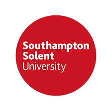
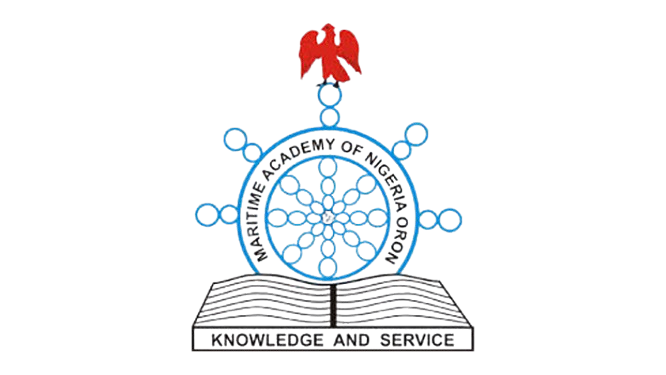
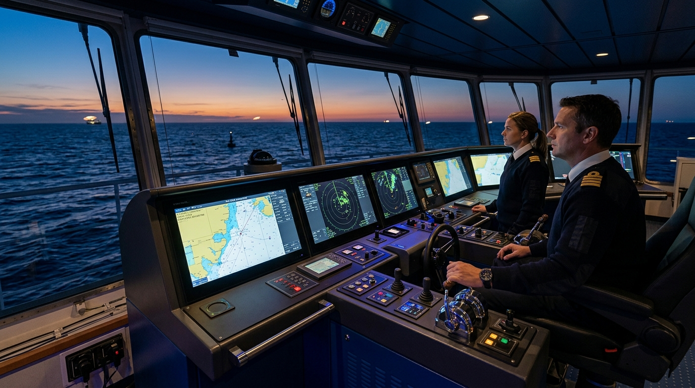

Commanding Marine Excellence Across Global Oceans
Seasoned Offshore Installation Manager (OIM), Mooring Master, and RMI Nautical Inspector with 42+ years of leadership commanding VLCCs, LNG carriers, offshore FSO terminals, and multi-purpose merchant fleets with an unblemished zero-incident safety record.
Certified by World-Leading Institutions
We take pride in showcasing our distinguished certifications across various fields such as maritime and project management. Our affiliations with top-notch logistics firms and professional associations highlight our commitment to excellence and expertise. Explore the impressive credentials that set us apart in the industry.


Four Decades of Master-Level Maritime Command
From stepping aboard as a Deck Cadet in 1981 to commanding supertankers and serving 20 years with ExxonMobil as Master and Offshore Installation Manager.

Strategic Leadership on High-Seas & Offshore Terminals
With a distinguished 42-year tenure in the international maritime and energy industries, Captain Steve Sandina Johnson stands as an authoritative Master Mariner, Offshore Installation Manager (OIM), and Maritime Consultant. Having commenced his journey at the Nautical College of Nigeria (now Maritime Academy of Nigeria, Oron) and graduated with an Applied Science Shipmaster Diploma from the prestigious Australian Maritime College, Captain Steve progressed through every nautical rank to attain Captaincy in 2002.
His career is distinguished by leading ExxonMobil's Yoho FSO (276,735 DWT) for nearly two decades, maintaining an enviable zero lost-time incident (LTI) safety record across tandem mooring, SPM offloading, and continuous production operations. Today, he continues to serve the maritime sector as a commissioned Nautical Inspector for the Republic of the Marshall Islands (RMI) and principal consultant for global marine operations.
Master STCW II/2 Unlimited
Certified Shipmaster with worldwide foreign-going command capability.
M.Sc Transport Management
WES-evaluated equivalent to a Canadian Master's Degree in Logistics.
MEMIR Certified (Aberdeen)
Major Emergency Management Initial Response specialist.
Transas NTPRO 5000 Simulator
Mooring Master & Dynamic Positioning Tandem simulator proficiency (2024).
Comprehensive Maritime Advisory & Operations
Delivering high-reliability solutions across offshore operations, regulatory compliance, ship vetting, and maritime supply chain management.
Mooring Master & Terminal Operations
Specialized navigation, maneuvering, and pilotage for deepwater terminals, Single Point Moorings (SPM), Ship-to-Ship (STS) transfers, and Tandem Mooring export operations.
- SPM & Tandem Mooring for VLCC / Suezmax tankers
- Transas NTPRO 5000 Simulator validated maneuvering
- Ship-to-Ship (STS) lightering and berthing advisory
- Marine traffic coordination and harbor pilotage
Flag State Inspection & Ship Vetting
Commissioned Nautical Inspector services upholding international maritime conventions, classification society rules, and rigorous safety vetting standards.
- Republic of the Marshall Islands (RMI) Flag State inspections
- Pre-registration, initial, and annual vessel audits
- Casualty, incident, and near-miss investigations
- OCIMF / SIRE compliance readiness & gap analysis
Offshore Installation Management (OIM)
Two decades of proven executive oversight commanding Floating Storage & Offloading (FSO) and FPSO units in high-stakes energy environments.
- Total safety management and zero-LTI culture leadership
- Major Emergency Management Initial Response (MEMIR)
- Planned maintenance system & drydock coordination
- Stakeholder engagement between operators and authorities
Marine Superintendency & Operations
End-to-end technical oversight ensuring fleet readiness, environmental compliance, and cost-effective voyage execution.
- Technical superintendency for bulk carriers, tankers & LNG
- Port operations interface & cargo transfer management
- MARPOL compliance & emissions reduction strategies
- Drydocking project management and life-extension studies
Maritime Logistics & Supply Chain
Leveraging an advanced M.Sc in Transport Management to streamline offshore oilfield logistics, material staging, and maritime supply chains.
- Upstream and downstream maritime supply chain design
- Offshore supply vessel (OSV) chartering and utilization
- Port logistics, bunkering, and cargo clearance
- Cost-reduction and operational route optimization
Executive Marine Training & Mentorship
Bridging the maritime generational gap through bespoke executive mentoring, Bridge Resource Management (BRM), and safety culture workshops.
- Human Element Leadership and Management (HELM)
- Advanced ECDIS, ARPA radar & simulator mentorship
- Emergency response and risk matrix training
- Talent development for junior deck officers & cadets
Interactive Fleet & Vessel Directory
Explore 20+ major vessels and offshore installations commanded and operated across global trade routes from 1981 to the present.
Sea-Time Command Breakdown
Total verified foreign-going sea service spanning 21 Years, 1 Month, and 2 Days across specialized vessel classes and navigational ranks.
Experience by Vessel Class
21Y 1M 2D TotalExperience by Navigational Rank
Command ProgressionProfessional Milestones & Leadership Journey
A comprehensive chronology of executive appointments, multinational shipping lines, and major oil & gas operators.
Nautical Inspector (Contract)
- Conducting pre-registration inspections for commercial vessels seeking entry into the RMI Registry.
- Performing initial, annual, and special nautical audits to ensure adherence to SOLAS, MARPOL, and RMI Marine Notices.
- Leading casualty, safety incident, and maritime security investigations on flag vessels.
- Overseeing official ship registration closings and ensuring high technical readiness.
Marine Advisor III (Contract)
- Provided expert oversight of offshore marine operations, risk management, and vessel logistics.
- Inspected service vessels, Single Point Mooring (SPM) infrastructure, and Tandem Mooring terminals.
- Liaised directly with regulatory authorities to enforce full environmental and safety compliance.
Master & Offshore Installation Manager (OIM) | Operations Lead
- Commanded and directed the Yoho FSO (276,735 DWT), managing safety, production offloading, and crew welfare.
- Maintained an impeccable safety record of zero lost-time injuries (LTI) over multi-year rotations.
- Executed planned maintenance shutdowns, regulatory surveys, and tandem export loading operations with international off-takers.
- Served as Operations Lead, Operations Specialist, and Operations Supervisor (2004–2012).
Master & Operations Superintendent
- Commanded product tanker M.T. Sir Michael (8,900 DWT), overseeing product discharges and navigation.
- Supervised fleet technical maintenance, port compliance, and cargo loading schedules.
Second Officer
- Supervised cryogenic cargo operations and bridge navigation aboard SS LNG Lagos (68,206 DWT).
- Conducted specialized gas carrier safety inspections and fire safety systems testing.
Chief Officer
- Served as Chief Mate aboard chemical/products tankers and bulk dry vessels (33,000–43,000 DWT).
- Directed cargo calculations, stability management, crew drills, and international port entries.
Chief Officer & Second Officer
- Managed container stowage, heavy cargo handling, and passage planning on modern container & dry cargo ships.
Deck Cadet → Third Officer → Second Officer
- Completed 4 years cadetship followed by promotion to 3rd and 2nd Navigational Officer across the River-class fleet.
Credentials, Licensures & Certifications Vault
Accredited by world-leading maritime colleges, classification bodies, safety institutes, and universities.
What Energy Leaders Say
Verbatim recommendations and peer endorsements from senior ExxonMobil leadership and operational directors.
"Mentored Captain Steve Johnson since 2018 at ExxonMobil Nigeria. I recognize Steve as an exceptional leader with over 40 years in marine operations and 20 years as a master mariner. Steve is known for his drive for operational excellence and commitment to safety, demonstrating strong analytical skills and effective communication. Highly recommend Captain Steve Johnson for senior operational roles."
"Recognizes Captain Sandina as a highly experienced Offshore Installation Manager for ExxonMobil’s Yoho FSO. Highlights his focus on safety, resulting in an enviable safety record. Describes him as an approachable leader with values of integrity and honesty, acknowledging his expertise in Safety, Integrity, Quality, Operations, and Maintenance."
"Provides a strong recommendation for Captain Steve Johnson, highlighting his 42-year maritime industry experience. Notes his technical proficiency and leadership skills in various roles, including Offshore Installation Manager and Marine Inspector, commending his contributions to successful projects, safety protocols, and zero lost-time incidents."
"Endorses Captain Steve’s excellent leadership and professionalism as the Offshore Installation Manager of Yoho FSO. Emphasises his role in mentoring and willingness to assist subordinates, expressing utmost confidence in Captain Steve’s capabilities in any future executive operational role."
Accreditations & Professional Memberships
Schedule Advisory or Vessel Inspection
Directly connect with Captain Steve Sandina Johnson for confidential maritime consultations, nautical vetting, and expert witness or advisory services.
Operational Base
Lagos, Nigeria • Global Worldwide Deployment (UK, West Africa, Asia-Pacific)